キウイの発芽は簡単ですね。
2021/06/20
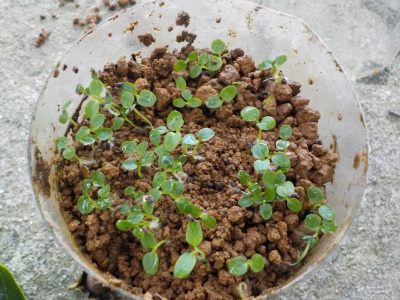
一か月前に種蒔きしたキウイが沢山発芽していました。
まだ小さいので、もうちょっと成長したら鉢上げしようと思います。
雄木になるか雌木になるか分からないので、6本くらいは育てた方がいいかな。
枯れる可能性もあるので、8本あった方がいいかな？
2021/06/20

一か月前に種蒔きしたキウイが沢山発芽していました。
まだ小さいので、もうちょっと成長したら鉢上げしようと思います。
雄木になるか雌木になるか分からないので、6本くらいは育てた方がいいかな。
枯れる可能性もあるので、8本あった方がいいかな？
2021/05/23
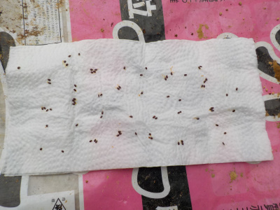
以前にもキウイは種蒔きしてて何本も順調に育っているんですが、また種を育ててみたくなりました。
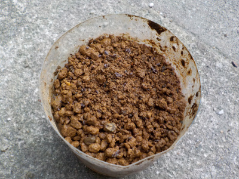
今回は水耕栽培はやめて、ペットボトルのちょっと密閉空間に蒔きました。
たぶんこっちの方が楽だと思います。放置しておけば勝手に芽が出るんじゃないかと予想しています。
2021/04/17
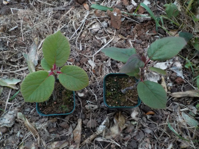
実生のキウイは何本も鉢から地植えに変えていたんですが、まだ2本が鉢のまま残っていました。
このまま置いていても何の役にも立たなそうなので、キウイが植えてある近くに植替えしました。
育ったらちょっと窮屈な感じになります。
日がだんだん長くなったので、今日は18：30まで作業が出来ました。
2020/08/29
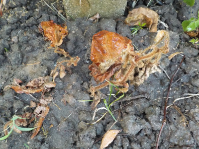
夏の暑さで水切れしました。
油断してました。
もう復活しないかもしれませんが、これからは頻繁に水やりをしようと思っています。
2020/07/18
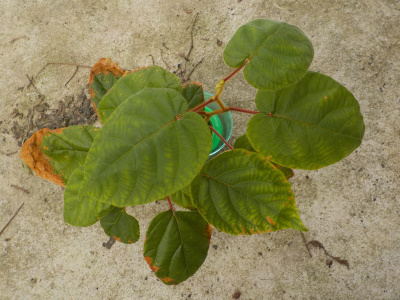
キウイの水耕栽培ですが、成長が止まった気がします。
葉っぱも薄く黄色くなりました。
このまま置いてても現状維持か枯れると思ったので、土に植えました。
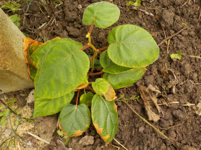
今まで屋内の水耕栽培でぬくぬく育っていたので直ぐに枯れるかもしれません。
でも兄弟苗が何本も育っているので惜しくないかな。
2020/07/12
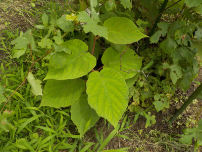
実生のキウイがすくすく育っていますが、葉っぱがとても大きい。
家には実生じゃないキウイもあるんですが、それよりとても大きいです。
受粉に使っている花粉は何でしょうね？
2020/03/08
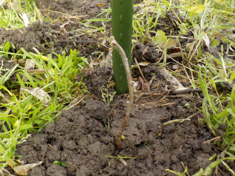
ポットのキウイを地植えにしました。
小さいけど育つかなー。
2020/02/23
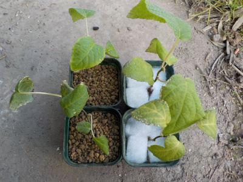
これから暖かくなりそうなので、屋外に移動しました。
2本は水耕栽培でろ過ウール、もう２本は土に植えました。
成長に差がでるかな？
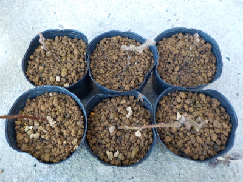
これは去年から屋外で育てているキウイです。
まだ冬モードです。
2020/02/15
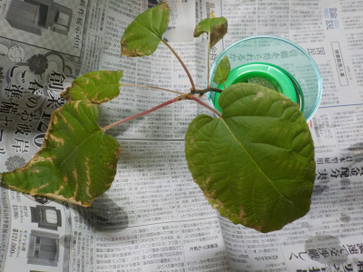
屋内なので葉っぱが落ちませんでした。
種まきから１１か月経ってこんな感じです。
今後さらに大きくなると思うと、屋内よりも屋外に出したほうがいいかな。
2019/10/27
先週ポット苗を3個作りましたが、今週も3個追加です。
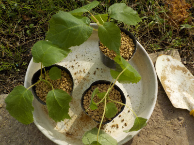
増やすのはいいけど、ちゃんと育てれるかな？
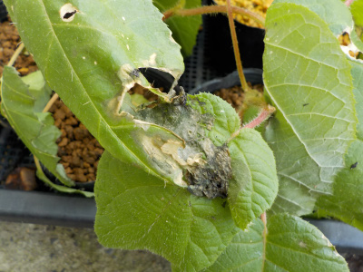
先週のキウイは虫に食べられていました。
外敵は怖いですね。
2019/10/20
水耕栽培キウイ3つをポット苗にしました。
2019/10/09
キウイの水耕栽培を１本にしました。
2019/07/28
キウイの苗が高温で痛められました。
2019/07/28
キウイの水耕栽培をしています。
2019/07/06
キウイの植え直しをしました。
2019/05/19
キウイのタッパー栽培はやめました。
2019/04/03
キウイの種から根が出てきました。
2019/03/10
キウイの種を蒔きました。
2016/07/03
キウイにキノコかな？
2014/05/31
キウイの実が出来ていました。
キウイを沢山育てて沢山食べたい。